AnnData object with n_obs × n_vars = 2700 × 32738
var: 'gene_ids'
layers: None (.X)Single-cell data and preprocessing
Lviv University
Source
This lecture follows Single-cell best practices
Heumos, Schaar, Lance et al. Best practices for single-cell analysis across modalities Nature Reviews Genetics, 2023 — https://www.sc-best-practices.org
Licensed Apache 2.0. Parts I–III of the book:
What makes this a data-science problem
A modern experiment yields a matrix of tens of thousands of cells by tens of thousands of genes, of which ~90% of entries are zero.
Everything in this lecture is a response to one of three facts: the matrix is sparse, the measurement is noisy, and the biology you want is confounded with the technology you used to see it.
Five preprocessing steps
The book organises everything before analysis into five steps, in this order:
The algorithms selected throughout this process can heavily affect downstream analysis and interpretation of the data.
And the tension that runs through all of it
Filter too much and you lose rare cell populations — exactly the biology that motivated a single-cell experiment.
Filter too little and you cannot annotate anything, because dying cells and doublets form their own spurious clusters.
There is no setting that is right for every dataset.
Cells
Robert Hooke, looking at cork through a microscope in 1665, called the compartments he saw cells — they reminded him of the rooms of a monastery.
Every organism is built from them. A human has on the order of \(3 \times 10^{13}\) of them, and although nearly all carry the same genome, a neuron and a liver cell could hardly be more different.
The difference is not which genes they have. It is which genes they are using.
Which is why we measure RNA
DNA tells you what a cell could do. RNA tells you what it is doing.
\[\text{DNA} \xrightarrow{\ \text{transcription}\ } \text{RNA} \xrightarrow{\ \text{translation}\ } \text{protein}\]
Measuring messenger RNA (mRNA) is a practical proxy for cell state: abundant, capturable, and — unlike protein — amplifiable.
Three generations
The economics are the point
Cost per genome fell faster than Moore’s law for over a decade. Single-cell genomics is a direct consequence: it only makes sense when sequencing is cheap enough to waste on resolving individual cells.
What bulk RNA-seq measures
Grind up a tissue, extract all the RNA, sequence it. You get one expression profile — the average over millions of cells.
That average can correspond to no actual cell. A 50/50 mix of two cell types looks identical to a homogeneous population expressing both gene sets at half intensity.
What single-cell adds
Sequence each cell separately and you recover the distribution, not just the mean:
The cost: far less RNA per measurement, so far more noise and far more zeros.
Droplet-based (10x Genomics, Drop-seq)
Cells are suspended and flowed past a stream of oil, so each is captured in its own aqueous droplet together with a bead carrying barcoded primers.
High throughput: \(10^4\)–\(10^6\) cells. Shallow: a few thousand genes per cell.
Plate-based (Smart-seq2/3, CEL-seq2)
Cells are sorted into individual wells of a plate. Far fewer cells (hundreds), but full-length transcript coverage and much greater depth per cell.
The trade-off in one line: droplets buy you cells, plates buy you depth per cell.
PCR amplifies, and amplification is not uniform
To sequence tiny amounts of RNA you must amplify it by PCR — but PCR is exponential and stochastic. One molecule might yield 1000 copies and its neighbour 100.
Counting reads therefore measures amplification luck as much as abundance.
The fix
Tag every original molecule with a random barcode — a UMI — before amplification. Then collapse all reads sharing a UMI back to one count.
\[\text{reads} \xrightarrow{\ \text{collapse by UMI}\ } \text{molecules}\]
This is why droplet data is count data in a meaningful sense: an entry of 7 means seven distinct mRNA molecules were captured, not seven reads.
When the cell will not survive dissociation
Some tissues — brain, frozen archival samples, adipose — cannot be dissociated into intact single cells. The alternative is to isolate nuclei instead.
| single-cell | single-nucleus | |
|---|---|---|
| captures | cytoplasmic + nuclear RNA | nuclear RNA only |
| works on frozen tissue | no | yes |
| mitochondrial reads | many | few |
| dissociation bias | strong | weaker |
The low mitochondrial content matters later: the QC thresholds in this lecture assume single-cell data.
Raw data processing
Before any of the analysis in this lecture, a pipeline (Cell Ranger, STARsolo, alevin-fry, kallisto|bustools) must:
The output is the count matrix: rows = cells, columns = genes, entries = molecules observed.
Where this lecture begins
We start at the count matrix, and treat it as given. Be aware that step 4 in particular — distinguishing a real cell from an empty droplet containing ambient RNA — is a modelling decision someone already made for you.
A matrix is not enough
You have a \(n_{\text{cells}} \times n_{\text{genes}}\) matrix. But you also need, attached to it and staying aligned through every filtering operation:
Keeping five NumPy arrays in sync by hand is how analyses go quietly wrong.
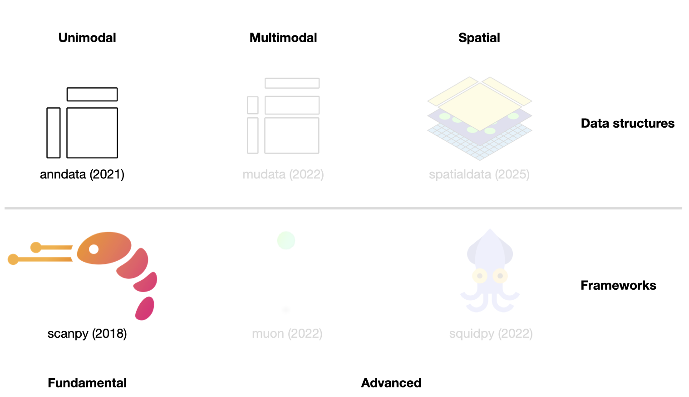
One object, aligned by construction
| slot | shape | holds |
|---|---|---|
.X |
\(n_{obs} \times n_{vars}\) | the main matrix (usually sparse) |
.obs |
\(n_{obs}\) rows | per-cell metadata, a DataFrame |
.var |
\(n_{vars}\) rows | per-gene metadata, a DataFrame |
.layers |
each \(n_{obs} \times n_{vars}\) | alternative matrices: counts, log1p_norm |
.obsm |
\(n_{obs} \times k\) | per-cell arrays: X_pca, X_umap |
.varm |
\(n_{vars} \times k\) | per-gene arrays: PCs |
.uns |
— | anything else: graphs, parameters, colours |
Subsetting adata[cells, genes] slices every one of them consistently. That is the entire value proposition.
Loading a dataset
We use PBMC3k throughout — peripheral blood mononuclear cells from a healthy donor, the Iris dataset of single-cell analysis. 2 700 cells, 5.6 MB.
The matrix is sparse, and must be
from scipy import sparse
X = adata.X
print("type :", type(X).__name__)
print("shape :", X.shape)
print("stored values :", X.nnz)
print(f"density : {100 * X.nnz / (X.shape[0] * X.shape[1]):.2f}%")
print(f"sparse memory : {X.data.nbytes / 1e6:.1f} MB")
print(f"dense would be : {X.shape[0] * X.shape[1] * 4 / 1e6:.1f} MB")type : csr_matrix
shape : (2700, 32738)
stored values : 2286884
density : 2.59%
sparse memory : 9.1 MB
dense would be : 353.6 MBRoughly 97% of the entries are zero. That is not a defect to be fixed — it is what the data is like.
Two different kinds of zero
Nothing in the count matrix distinguishes them. Every method downstream has to cope with that ambiguity, and much of the methodological argument in the field is about how.
A consequence worth remembering
“Gene X is absent in cluster 3” is a much weaker claim than “gene X is abundant in cluster 3”. Absence of evidence is cheap in single-cell data.
The one gotcha that bites everybody
Subsetting an AnnData returns a view, not a copy — cheap, but read-only in practice:
is a view : True
shape : (1000, 13)
after .copy() -> FalseNote that one expression sliced both axes and carried .obs and .var along with them.
Writing to a view triggers an implicit copy and a warning. The habit worth forming: end every filtering step with .copy(), as we do below. It costs memory once and saves confusion repeatedly.
h5ad
The on-disk format is HDF5 with a documented layout — .X, .obs, .var and every other slot round-trip exactly.
written: 21.5 MB
backed mode: True | X: _CSRDatasetbacked="r" leaves .X on disk and reads slices on demand — the difference between a dataset that fits in RAM and one that does not. The trade is that most scanpy functions need an in-memory matrix, so backed mode is for inspection and subsetting, not for the full pipeline.
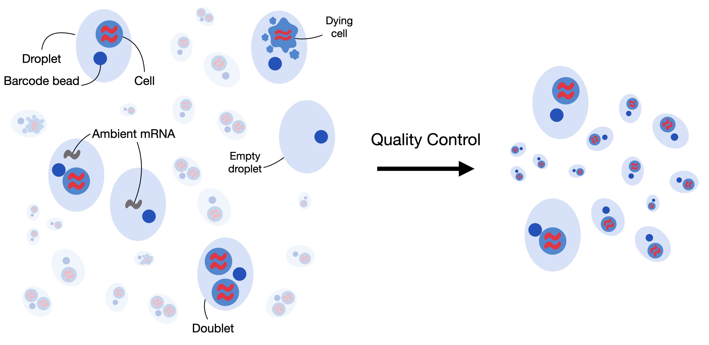
The barcode-rank (knee) plot
Before QC there is an earlier question the pipeline already answered: of the ~750 000 possible barcodes, which caught a cell and which caught only ambient soup?
Rank barcodes by total counts, plot on log-log, and a real experiment shows a knee: a plateau of true cells, a sharp drop, then a long tail of empty droplets.
raw = sc.datasets.pbmc3k()
counts = np.asarray(raw.X.sum(1)).ravel()
order = np.sort(counts)[::-1]
f, ax = plt.subplots(figsize=(5, 3.2))
ax.loglog(np.arange(1, len(order) + 1), order)
ax.set_xlabel("barcode rank")
ax.set_ylabel("total UMI counts")
ax.set_title("barcode rank plot")
plt.tight_layout()
plt.show()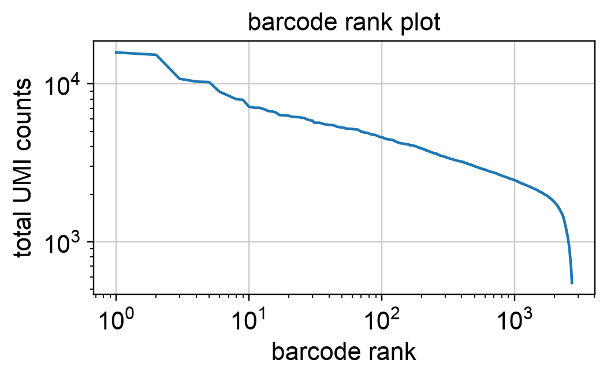
This dataset is already filtered — the empty droplets were removed upstream — which is why the tail falls off a cliff instead of running on for another \(10^5\) barcodes.
Three covariates
Cell QC is conventionally done on three numbers per barcode:
A cell with low counts, few genes, and a high mitochondrial fraction is the classic signature of a dying cell: the membrane broke, cytoplasmic mRNA leaked out, and what remains is the mRNA protected inside mitochondria.
Consider them jointly, never separately
Cells with high mitochondrial content may simply be respiratory — cardiomyocytes, for instance — and are perfectly healthy.
Cells with high counts may be large, not doublets.
Thresholding each covariate independently throws away real biology.
calculate_qc_metrics
adata.var["mt"] = adata.var_names.str.startswith("MT-")
adata.var["ribo"] = adata.var_names.str.startswith(("RPS", "RPL"))
sc.pp.calculate_qc_metrics(
adata, qc_vars=["mt", "ribo"], inplace=True, log1p=True, percent_top=[20]
)
adata.obs[
["n_genes_by_counts", "total_counts", "pct_counts_mt", "pct_counts_ribo"]
].describe().round(2)| n_genes_by_counts | total_counts | pct_counts_mt | pct_counts_ribo | |
|---|---|---|---|---|
| count | 2700.00 | 2700.00 | 2700.00 | 2700.00 |
| mean | 846.99 | 2366.90 | 2.22 | 34.95 |
| std | 282.10 | 1094.26 | 1.17 | 10.22 |
| min | 212.00 | 548.00 | 0.00 | 1.06 |
| 25% | 690.00 | 1757.75 | 1.54 | 26.33 |
| 50% | 817.00 | 2197.00 | 2.03 | 36.77 |
| 75% | 953.25 | 2763.00 | 2.64 | 43.35 |
| max | 3422.00 | 15844.00 | 22.57 | 59.44 |
n_genes_by_counts — genes with a positive count in this celltotal_counts — library sizepct_counts_mt — proportion of counts that are mitochondrialimport matplotlib.pyplot as plt
import seaborn as sns
f, axs = plt.subplots(1, 3, figsize=(11, 3))
sns.histplot(adata.obs["total_counts"], bins=100, ax=axs[0])
axs[0].set_title("count depth")
sns.histplot(adata.obs["n_genes_by_counts"], bins=100, ax=axs[1])
axs[1].set_title("genes detected")
sns.histplot(adata.obs["pct_counts_mt"], bins=100, ax=axs[2])
axs[2].set_title("% mitochondrial")
plt.tight_layout()
plt.show()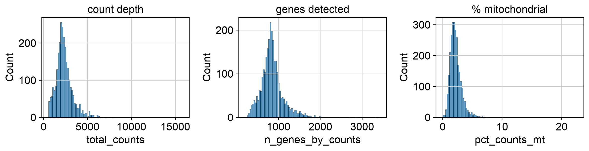
Long right tails on the first two; a bulk of cells below 5% mitochondrial with a tail above.
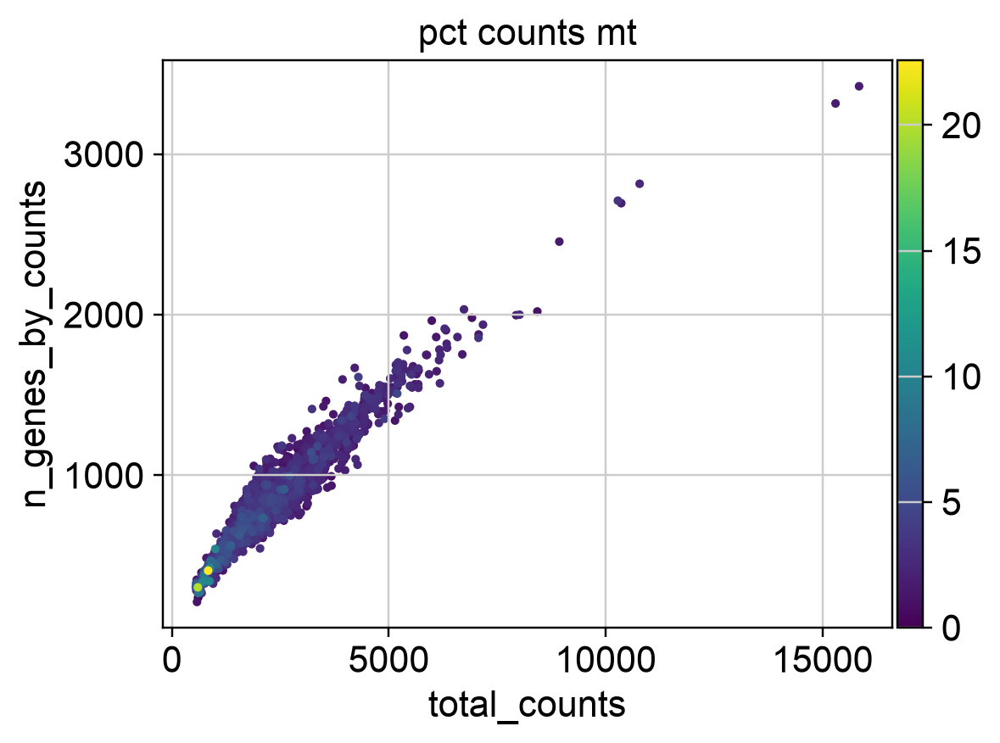
The dying cells are the points that fall below the main cloud — fewer genes than their count depth implies — and they are the ones coloured by high mitochondrial fraction. This is the plot that shows why the covariates must be read together.
Median absolute deviation
Rather than eyeballing cut-offs, mark a cell an outlier if a covariate sits more than \(n\) MADs from the median:
\[\text{MAD} = \operatorname{median}\big(|X_i - \operatorname{median}(X)|\big)\]
MAD is used instead of the standard deviation because it is robust: a handful of extreme cells do not inflate it, whereas they would inflate \(\sigma\) and hide themselves.
Applying it
adata.obs["outlier"] = (
is_outlier(adata, "log1p_total_counts", 5)
| is_outlier(adata, "log1p_n_genes_by_counts", 5)
| is_outlier(adata, "pct_counts_in_top_20_genes", 5)
)
adata.obs["mt_outlier"] = is_outlier(adata, "pct_counts_mt", 3) | (
adata.obs["pct_counts_mt"] > 8
)
print("count/gene outliers :", int(adata.obs.outlier.sum()))
print("mitochondrial :", int(adata.obs.mt_outlier.sum()))
print("total cells :", adata.n_obs)count/gene outliers : 101
mitochondrial : 212
total cells : 2700Note the asymmetry: 5 MADs on depth-like covariates, but only 3 on the mitochondrial fraction plus a hard 8% ceiling. The mitochondrial signal is the one we trust most as evidence of damage.
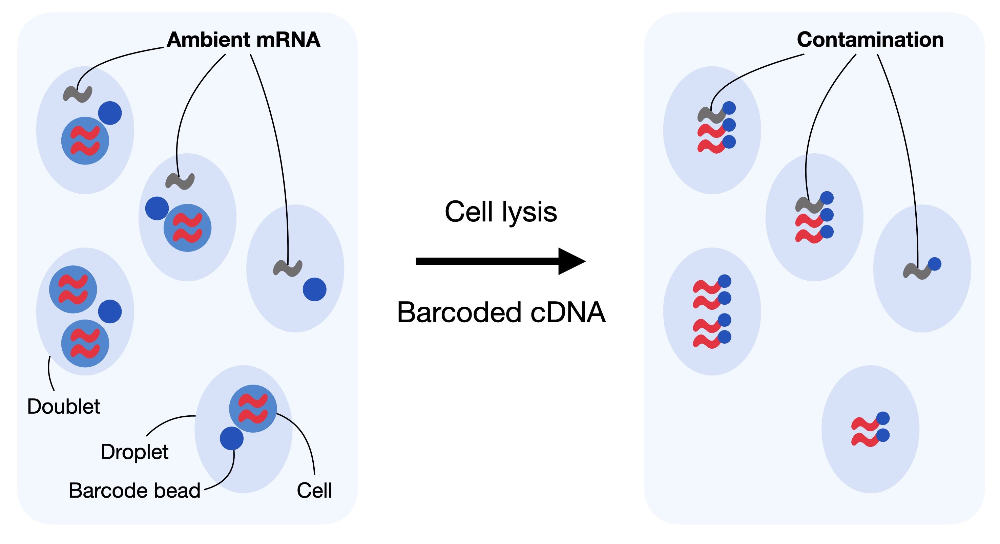
The soup
When cells are dissociated, some lyse and release their mRNA into the suspension. Every droplet is then filled with a little of this ambient mRNA — “the soup” — regardless of which cell it caught.
The result: every cell appears to express a bit of everything, weighted by whatever was most abundant in the sample.
Correcting it
The correction estimates the soup profile from empty droplets — barcodes that caught no cell, but did catch the ambient mix — and subtracts a fraction of it from every real cell.
The standard tool (SoupX) is R-only, so we do not run it here. Its idea matters more than its API: droplet-based data has a background, and the background is measurable.
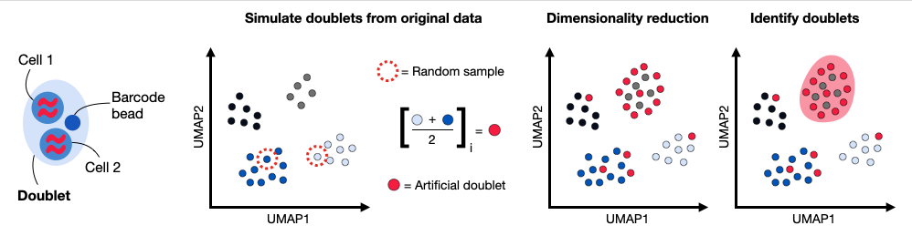
Two cells, one barcode
If two cells end up in the same droplet, their transcripts are merged under a single barcode — and downstream you will see a “cell” that appears to express two incompatible programmes at once.
Doublet rate scales with loading concentration — roughly 0.8% per 1 000 cells loaded on 10x.
Detection by simulation — Scrublet
The trick: you cannot label real doublets, but you can make them. Add pairs of observed cells together to synthesise artificial doublets, embed everything, and score each real cell by how many of its neighbours are artificial.
flagged doublets : 32
rate : 1.2%
score range : 0.007 - 0.5061.2% is in the expected range for a 2 700-cell 10x run.
Flag, do not delete — yet
The book’s advice is to keep identified doublets for now and revisit them during visualization.
The reason is that doublet callers are imperfect in a specific way: a genuinely transitional cell type, expressing two programmes because it is becoming one from the other, looks exactly like a heterotypic doublet. Deleting first and asking later means you can never tell.
Cells, then genes
cells: 2700 -> 2419 (281 removed)
genes: 32738 -> 9483Genes detected in fewer than 20 cells are dropped: at that level you cannot distinguish real low-level expression from ambient contamination or noise, and they add dimensions without adding signal.
Two cells with the same biology can have very different counts
Capture, reverse transcription and sequencing each add variability. A cell with 8 000 UMIs and one with 2 000 UMIs may be the same cell type, sampled to different depths.
Comparing raw counts between cells therefore measures sequencing luck as much as it measures expression.
And the variance is not constant
Count data has a mean–variance relationship: highly expressed genes vary more, in absolute terms, than lowly expressed ones. The Gamma–Poisson (negative binomial) model captures this:
\[\operatorname{Var}[Y] = \mu + \alpha\mu^2\]
Most statistical methods downstream — PCA above all — assume roughly uniform variance. So we transform.
Seeing the problem before fixing it
cnt = adata.X # still raw counts -- we have not normalized yet
mean = np.asarray(cnt.mean(0)).ravel()
var = np.asarray(cnt.power(2).mean(0)).ravel() - mean**2
keep = mean > 0
f, ax = plt.subplots(figsize=(5, 3.4))
ax.loglog(mean[keep], var[keep], ".", ms=2, alpha=0.3)
lo, hi = mean[keep].min(), mean[keep].max()
ax.loglog([lo, hi], [lo, hi], "r-", lw=1, label="Poisson: Var = mean")
ax.set_xlabel("gene mean")
ax.set_ylabel("gene variance")
ax.legend()
plt.tight_layout()
plt.show()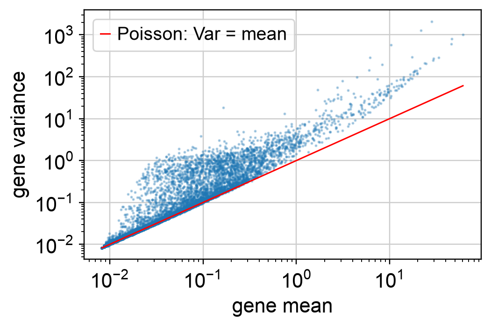
If counts were pure Poisson, every point would sit on the red line. They sit above it, and increasingly so at high expression — that excess is the overdispersion \(\alpha\mu^2\) term. Normalization and the variance-stabilising transform both exist to flatten this.
The standard choice
\[f(y) = \log\!\left(\frac{y}{s} + y_0\right)\]
with \(y\) the raw count, \(s\) a per-cell size factor, and \(y_0\) a pseudo-count (usually 1, so that zeros stay zero).
The size factor is just the cell’s depth relative to a target:
\[s_c = \frac{\sum_g y_{gc}}{L}\]
scanpy uses the median count depth as \(L\); other conventions use \(L = 10^4\) or \(10^6\) (the familiar counts per million).
In two lines
AnnData object with n_obs × n_vars = 2419 × 9483
obs: 'n_genes_by_counts', 'log1p_n_genes_by_counts', 'total_counts', 'log1p_total_counts', 'pct_counts_in_top_20_genes', 'total_counts_mt', 'log1p_total_counts_mt', 'pct_counts_mt', 'total_counts_ribo', 'log1p_total_counts_ribo', 'pct_counts_ribo', 'outlier', 'mt_outlier', 'doublet_score', 'predicted_doublet'
var: 'gene_ids', 'mt', 'ribo', 'n_cells_by_counts', 'mean_counts', 'log1p_mean_counts', 'pct_dropout_by_counts', 'total_counts', 'log1p_total_counts', 'n_cells'
uns: 'scrublet', 'log1p'
layers: None (.X), 'counts', 'log1p_norm'Always stash the raw counts in a layer first. Several methods later — deviance-based feature selection, Pearson residuals, most differential-expression tests — need counts, not transformed values, and you cannot invert the transform.
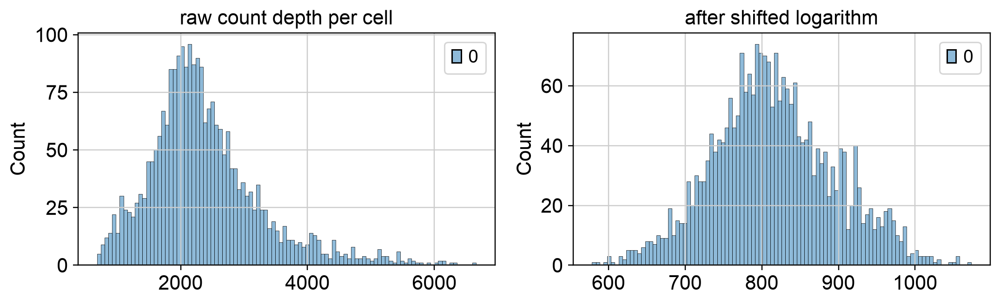
The long right tail is pulled in. Cells are now comparable to one another, which is what every subsequent step assumes.
A different philosophy
Instead of rescaling and log-transforming, fit a model of what counts you would expect from sequencing depth alone, and keep the residual:
\[z_{gc} = \frac{y_{gc} - \hat\mu_{gc}}{\sqrt{\hat\mu_{gc} + \hat\mu_{gc}^2/\theta}}\]
where \(\hat\mu_{gc}\) is the count expected under a depth-only null model. What remains is, by construction, the part depth does not explain.
pearson = sc.experimental.pp.normalize_pearson_residuals(
adata, layer="counts", inplace=False
)
adata.layers["pearson"] = pearson["X"]
print("Pearson residual layer:", adata.layers["pearson"].shape)
print(" range:", round(float(adata.layers["pearson"].min()), 2),
"to", round(float(adata.layers["pearson"].max()), 2))Pearson residual layer: (2419, 9483)
range: -6.58 to 49.18No pseudo-count, no log, and negative values are meaningful — less than depth predicts.
There is no consensus, and that is the honest answer
| method | needs | notes |
|---|---|---|
| shifted logarithm | nothing | the default; simple, fast, well understood |
| analytic Pearson residuals | raw counts | better preserves heterogeneity; recommended by several benchmarks |
| scran pooling | R, a coarse clustering | strong for batch-effect settings |
The book’s own advice is to compute several and keep them as separate layers, then choose per downstream task. This is cheap — a layer is just another matrix — and it makes the choice visible rather than buried.
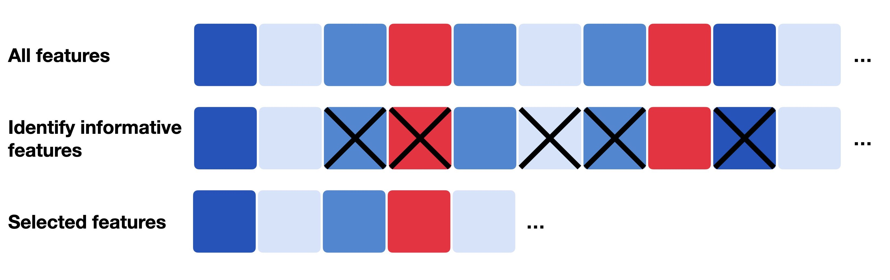
Most genes tell you nothing about cell identity
After filtering we still have ~10 000 genes. But a given tissue expresses only a fraction of the genome informatively, and most remaining genes are either near-constant across cells or almost entirely zero.
Keeping them:
Convention is to keep the top 2 000–4 000 genes.
Variance, relative to what you would expect
A gene with high mean expression will have high variance simply because of the mean–variance relationship. So we select genes whose variance is high given their mean — binning by expression level and taking the most dispersed within each bin.
selected: 2000 of 9483| means | dispersions_norm | |
|---|---|---|
| index | ||
| ISG15 | 0.716154 | 0.991774 |
| TNFRSF4 | 0.071765 | 0.339945 |
| CPSF3L | 0.103844 | 4.261950 |
| MRPL20 | 0.277746 | 0.672410 |
| C1orf86 | 0.198141 | 1.408984 |
Black points are selected. Note they span the whole expression range — that is the mean-correction working. A naive “top variance” rule would have selected only the right-hand side.
Comparing two selections
hvg_seurat = adata.var.highly_variable.copy()
sc.pp.highly_variable_genes(adata, n_top_genes=2000, flavor="cell_ranger")
hvg_cellranger = adata.var.highly_variable.copy()
overlap = (hvg_seurat & hvg_cellranger).sum()
print(f"seurat flavour : {hvg_seurat.sum()}")
print(f"cell_ranger flavour: {hvg_cellranger.sum()}")
print(f"overlap : {overlap} ({100 * overlap / 2000:.0f}%)")
adata.var["highly_variable"] = hvg_seurat # restoreseurat flavour : 2000
cell_ranger flavour: 2000
overlap : 1296 (65%)Two reasonable methods, same dataset, same \(k\) — and they disagree on a substantial share of the list. That disagreement propagates into the PCA, the graph, and the clusters.
This is worth showing students explicitly: the pipeline looks deterministic, and is not.
Selecting on raw counts instead
Binomial deviance asks a cleaner question: how badly does a constant-rate null model fit this gene?
Deviance is twice the gap in log likelihood between two models of a gene’s counts: one where every cell draws the gene at the same rate, and one that reproduces the counts exactly.
A gene switched on in one population and off elsewhere fits the constant-rate model badly, and so scores high. A gene expressed uniformly scores low.
Its advantage: it works on raw counts, so it does not inherit whatever distortions your normalization introduced. The reference implementation is R-only; scanpy’s Pearson-residual HVG selection is the closest Python equivalent.
A biological covariate you often do not want
Proliferating cells differ enormously in expression simply because of where they are in the cell cycle. If you are studying cell type, that variation is a nuisance that can dominate the clustering.
s_genes = [g for g in ["MCM5", "PCNA", "TYMS", "MCM2", "RRM2", "UNG", "GINS2"]
if g in adata.var_names]
g2m_genes = [g for g in ["HMGB2", "CDK1", "TOP2A", "MKI67", "CCNB2", "BUB1"]
if g in adata.var_names]
sc.tl.score_genes_cell_cycle(adata, s_genes=s_genes, g2m_genes=g2m_genes)
print(adata.obs["phase"].value_counts())phase
S 1640
G2M 729
G1 50
Name: count, dtype: int64PBMCs are mostly non-proliferating, so nearly everything lands in G1 — which is the right answer here. In a tumour or an organoid it would not be.
Regressing it out is a decision, not a cleanup
sc.pp.regress_out will remove the cell-cycle signal — and will remove real biology with it if proliferation is your phenotype. Score it, look at it, and only then decide.
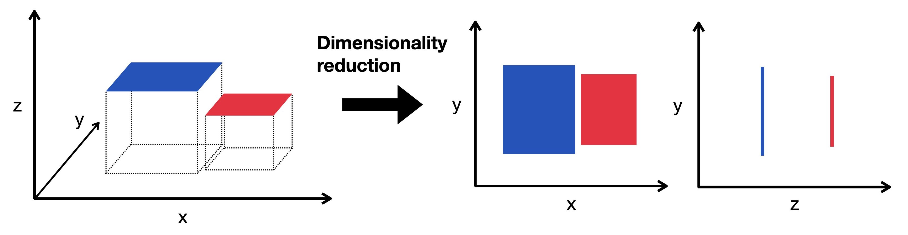
2 000 dimensions is still far too many
The standard route: PCA to ~50 dimensions to denoise, then a neighbour graph, then a 2-D embedding purely for display.
Linear, and used as a denoiser
X_pca: (2419, 50)
variance explained by first 10 PCs: 25.6 %The first components capture the dominant axes of variation — which, in a healthy dataset, are the major cell-type distinctions.
The “elbow” is where additional components stop capturing structure and start capturing noise. Here it is around 10–15; taking 50 is the common conservative default, and the downstream neighbour graph is fairly insensitive to the exact choice.
Everything downstream runs on this
graph: (2419, 2419) | stored edges: 53698Each cell is connected to its \(k\) nearest neighbours in PCA space. Both the clustering and the UMAP in the next lecture are functions of this graph, not of the original matrix — so \(k\) and n_pcs matter more than they look.
Two non-linear embeddings
Both take the high-dimensional neighbourhood structure and find a 2-D arrangement preserving it as well as possible.
Neither is a projection in the PCA sense. You cannot invert them, and you cannot read distances off them.
import time
t0 = time.time()
sc.tl.tsne(adata, n_pcs=30)
t_tsne = time.time() - t0
print(f"t-SNE took {t_tsne:.1f}s")
f, axs = plt.subplots(1, 2, figsize=(10, 4))
sc.pl.umap(adata, color="total_counts", ax=axs[0], show=False, title="UMAP")
sc.pl.tsne(adata, color="total_counts", ax=axs[1], show=False, title="t-SNE")
plt.tight_layout()
plt.show()t-SNE took 4.2s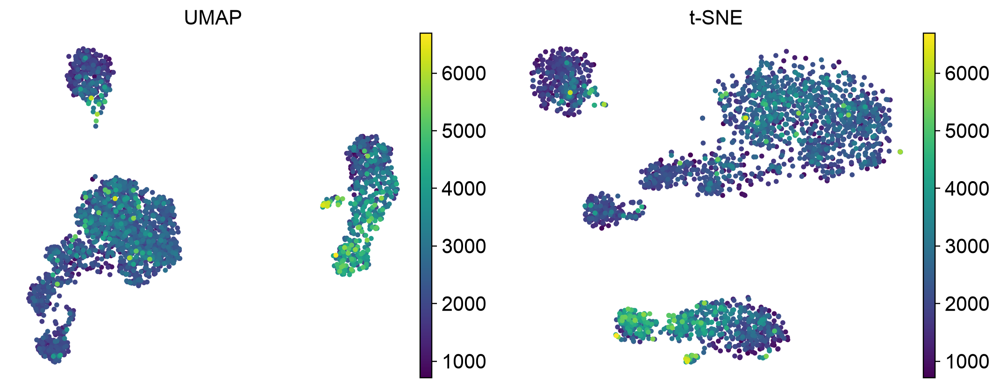
Same graph, same data, two embeddings. The groups agree; their positions and spacing do not. That is the clearest possible argument for not reading geometry off either.
What you may and may not conclude
May: these cells form distinct groups; this group is larger than that one; this cell sits between two groups in neighbour-space.
May not:
A UMAP is a visualisation of a graph, and the graph came from choices you made about PCs and \(k\). Change them and the picture changes.
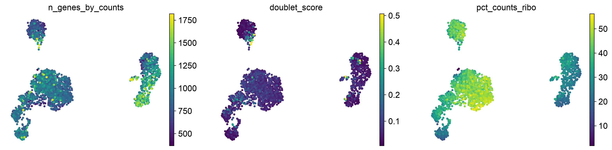
This is the diagnostic that matters. If a group of cells is defined by its QC metrics rather than its biology — a cluster of high-doublet-score cells, or one that is purely low-depth — your preprocessing has produced an artefact, and you should go back rather than annotate it as a cell type.
The arithmetic
PBMC3k is a teaching dataset. Atlas-scale projects — Human Cell Atlas, Tabula Sapiens — are three orders of magnitude larger, and then the storage decision stops being free:
| cells | genes | dense (float32) | sparse at 5% |
|---|---|---|---|
| 2 700 | 20 000 | 0.2 GB | 0.02 GB |
| 100 000 | 20 000 | 8.0 GB | 0.8 GB |
| 1 000 000 | 20 000 | 80 GB | 8.0 GB |
Sparsity is not an optimisation here. It is the difference between running on a laptop and not running at all.
CSR, CSC, COO — and why the choice shows up in your runtime
from scipy import sparse
raw_counts = sc.datasets.pbmc3k().X
fmts = {
"CSR": raw_counts.tocsr(),
"CSC": raw_counts.tocsc(),
"COO": raw_counts.tocoo(),
}
for name, M in fmts.items():
nbytes = sum(
getattr(M, a).nbytes for a in ("data", "indices", "indptr", "row", "col")
if hasattr(M, a)
)
print(f" {name}: {nbytes / 1e6:6.2f} MB")
print(f" dense: {raw_counts.shape[0] * raw_counts.shape[1] * 4 / 1e6:.1f} MB") CSR: 18.31 MB
CSC: 18.43 MB
COO: 27.44 MB
dense: 353.6 MBA per-gene loop over a CSR matrix is an easy way to make an analysis far slower than it needs to be — measured on this dataset, summing 2 000 genes one at a time takes 55× longer over CSR than over CSC.
And when each is the right answer
1. Backed mode — keep .X on disk in HDF5 and read slices on demand. Costs nothing to try; limited, because most scanpy functions want an in-memory array.
2. Out-of-core / chunked — back .X with a Dask array or a Zarr store and process in chunks. This is the same strategy as the Dask lectures, applied to a genomics matrix: the graph of operations is built first, then executed chunk-wise.
3. GPU — rapids-singlecell reimplements the scanpy API on cuDF/cuPy. PCA, neighbours, UMAP and Leiden on a GPU are commonly 10–100× faster, which turns a coffee-break pipeline into an interactive one.
Profile before optimising
For a standard pipeline on a large dataset, the cost is concentrated in three places:
n_pcs matters for runtime as well as for biology.Everything before them — QC, normalization, HVG selection — is essentially linear in the number of stored values and is rarely the bottleneck.
Note what this means: the graph is computed once and then used three times. Getting it right matters more than tuning what comes after.
This is the DAG story again
The pipeline is a dependency graph: QC → normalize → HVG → PCA → neighbours → {UMAP, Leiden, DE}.
h5ad files is memoisation over that DAGThe single-cell community solved this with scanpy’s in-place convention and .h5ad checkpoints rather than with a scheduler — but it is the same problem, and at atlas scale people do reach for workflow engines.
The pipeline, end to end
| step | function | what it fixes |
|---|---|---|
| QC metrics | sc.pp.calculate_qc_metrics |
— |
| outlier filtering | MAD on 3 covariates | dying and broken cells |
| doublets | sc.pp.scrublet |
two cells, one barcode |
| gene filtering | sc.pp.filter_genes |
noise-only genes |
| normalization | normalize_total + log1p |
differing sequencing depth |
| feature selection | sc.pp.highly_variable_genes |
uninformative dimensions |
| PCA | sc.pp.pca |
noise, dimensionality |
| neighbour graph | sc.pp.neighbors |
— |
| embedding | sc.tl.umap |
human eyes |
Every step is a modelling choice pretending to be a default
normalize_total() looks like housekeeping. It is a decision that every cell’s total RNA content should be treated as uninformative — which is false for cell types that genuinely differ in size and transcriptional output.
The same is true of the MAD multiplier, the 2 000-gene cut-off, the number of PCs, and \(k\).
Defaults are defensible starting points, not neutral ones. The honest workflow computes several and checks whether the conclusion survives.
Try these
nmads=3 and nmads=8. How many cells does each remove? Do any clusters disappear?log1p_norm and pearson layers: run PCA on each and check whether the neighbour graphs agree (adata.obsp["connectivities"]).n_top_genes to 500, 2 000 and 5 000. How much does the UMAP change? Does the number of visible groups change?pct_counts_ribo on the UMAP. Ribosomal content often tracks cell state — can you see structure in it?sc.pp.log1p and run PCA on the raw normalized counts. What happens to the variance ratio, and why?adata.layers["counts"], verify that sc.pp.normalize_total really does make the row sums equal.Sources
Identifying cellular structure